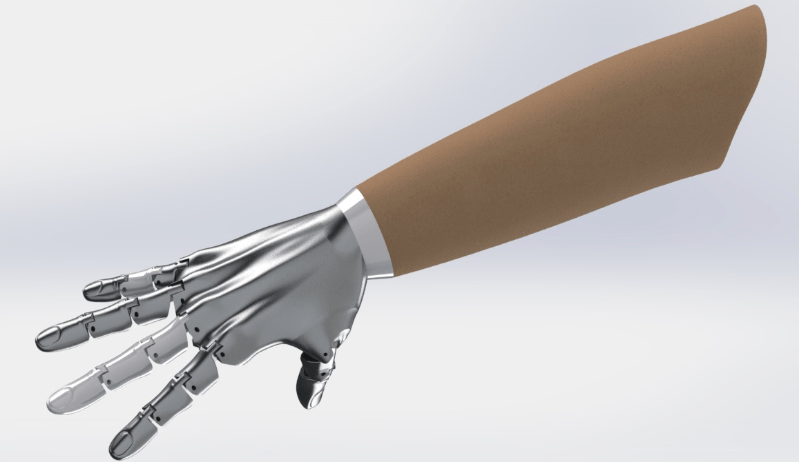

Dispositivos Donados a la Sociedad
Mejorar la Calidad de Vida
Primera Fundacion Tecnologica en Mexico
Desarrollo de Tecnologia en Sinaloa
Laboratorio de Clase Mundial en Sinaloa

Jóvenes en Actividades de Desarrollo Tecnológico
Oportunidad de
Trabajo
Tecnología para Donar a más Familias

Se dona a quien más lo necesita

Vinculación con las Universidades Prestigiadas


Ultimas Donaciones
Agradecemos la confianza de nuestras empresas donadoras, que hacen posible alcanzar el objetivo de donar Dispositivos Médicos Tecnológicos, de acuerdo al programa “Dar Para Donar”.

Jóvenes Emprendedores - Verano 2015
Damos el banderazo por el inicio al Verano de Jóvenes Emprendedores 2015 en Fundación Markoptic A.C. el cual se llevara a cabo del 15 de junio al 31 de julio en los cuales destaca la participación del programa FESE.

Certificación en SolidWorks
Nos sentimos muy contentos al dar a conocer, que nuestros Jóvenes del Centro de Investigación Científica, Desarrollo Tecnológico E Innovación lograron obtener la Certificación en SolidWorks 2015 para el diseño y simulación para el desarrollo de tecnología.
¡Muchas Gracias!
Agradecemos a nuestros colaboradores por la confienza que nos dan, de mejorar la calidad de vida de personas con algun discapacidad